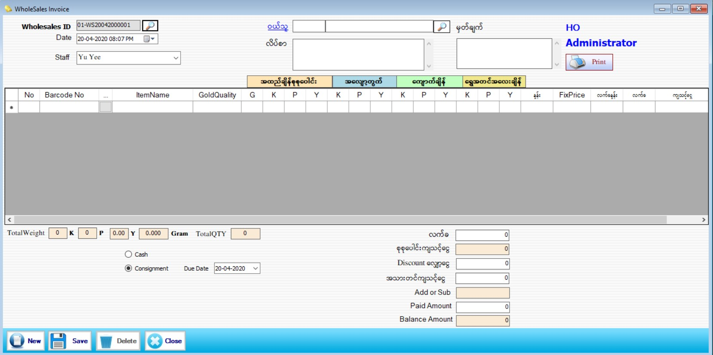

WholeSale Invoice

- Transaction အောက်ရှိ WholeSales ကို နှိပ်ပါ။
- WholeSales ID တွင် Series အလိုက် Software မှ Auto တွက်ပေးသွားမည်။Date တွင် ယခု လက်ရှိရောက်နေသော အချိန်ကို ပြပေးပါမည်။
- ဘားကုတ် နံပတ်ကို Scan ဖတ်၍သော်လည်းကောင်း ခဲရောင်လေးထောင့်တုံးကို နှိပ်၍သော်လည်းကောင်း WholeSales ရောင်းမည့် Items များကိုရွေးချယ်နိုင်ပါသည်။
- အထည် များကို ပေါက်စေ◌ျးသတ်မှတ်ပြီးသော် လည်းကောင်း Fixprice သတ်မှတ်၍ သော်လည်းကောင်း အထည်များကို လက်ကားပေးနိုင်မည်ဖြစ်သည်။
- Total Weight တွင် Stock Setup မှာ သတ်မှတ်ခဲ့သည့်အတိုင်း အလေးချိန်ကျလာပါမည်။
- WholeSales Invoive ဖွင့်ရာတွင် Cash or Consignment တစ်ခုကို ရွေး၍ Voucher ဖွင့်နိုင်ပါသည်။
- Cash(Sale) နှင့် ဖွင့်ထားသော ဘောင်ချာများသည် အရောင်းအနေဖြင့် ငွေ၀◌င်မည် ဖြစ်ပြီး Consignment(Pay) ရွေးထားသောဘောင်ချာရှိအထည်များသည် အပေးစာရင်း အထွက်အနေဖြင့်သာ ပြပေးမည်ဖြစ်သည်။
- Data များ ထည့်သွင်းပြီးပါက Save Button ကို နှိပ်၍ သိမ်းဆည်းနိုင်ပါသည်။
- အသစ်ပြုလုပ်မည်ဆိုပါက New Button ကိုနှိပ်၍ အသစ်ပြုလုပ်နိုင်ပါသည်။
- ပြန်လည်ကြည့်ရှုလိုပါက WholeSales ID ဘေးရှိ မှန်ဘီလူးကိုနှိပ်၍ ကြည့်နိုင်ပါသည်။
- Data များပြန်ဖျက်လိုပါက ဖျက်လိုသောItem များကို ရွေးပြီး Delete Button ကိုနှိပ်၍ ဖျက်နိုင်ပါသည်။
- WholeSales Form အသုံးပြုပြီးပါက Close Button ကို နှိပ်၍ ပိတ်နိုင်ပါသည်။